Each card is one client comment and what we changed for it. Before is the SCORM shipped on 15 Nov, which is what the client saw. After is today's fixed build. Both were recorded the same way, with the same clicks. Every Arabic line shown comes from the approved translation file; no new Arabic was written.
Approved: 0 of 14 (7 fixes + 7 new media)
No new media needed. These are built and tested.
SMP 4.1 Communicating with crowds · Screen 4.2 "Mark the moment" (Majed and the megaphone)
Client: "The marks on the video don't match the options beneath."
The clip was right: mistake 1 (megaphone at a face) happens at 0:01–0:09. But when a learner did not spot it, the course pinned "Moment 1" at the end of the clip, 0:24, over a frame where the megaphone is lowered. Now a missed moment is pinned at its own time (0:04), and the clip jumps back to it. No words changed. This fix applies to every lesson that has "Mark the moment".
SMP 4.2 Crowd psychology at football · Screen 5.1 "Mood reader" (Mark the moment)
Client: "The marked action and option don't match."
The answer windows crossed the clip's scene changes. "Sudden silence" started at 0:19.5, while the fans were still cheering. Each window now sits inside its own scene, and "Sudden silence" starts at 0:20.8, when the cheering stops. No words changed.
| # | Right answer | Arabic (approved) | Before | After |
|---|---|---|---|---|
| 1 | Smiles, singing in place | ابتسامات، وغناء في الأماكن | 1.5–6 s | 0.3–5.75 s |
| 2 | Anger aimed at staff; no information | غضب موجّه إلى الموظفين؛ لا معلومات | 7.5–12 s | 5.85–11.65 s |
| 3 | Groups forming and closing the gap | مجموعات تتشكّل وتقلّص المسافة | 13.5–18 s | 11.75–17.9 s |
| 4 | Sudden silence; heads turning | صمت مفاجئ؛ رؤوس تلتفت | 19.5–24 s | 20.8–24.3 s |
| 5 | Rumour spreading; people moving together | شائعة تنتشر؛ أناس يتحركون معًا | 25.5–30 s | 24.4–30.0 s |
SMP 6.1 Crowd safety matters · Screen 8.2 "How full is it?"
Client: "Many of those with no images or photos."
The 8 "Picture N: what do you do?" steps had no picture; only the "how full?" steps did. Each "what do you do?" step now shows the same picture as its "how full?" step, so all 16 steps have one. No words changed. The 6 weak pictures themselves are being remade (Part 2).
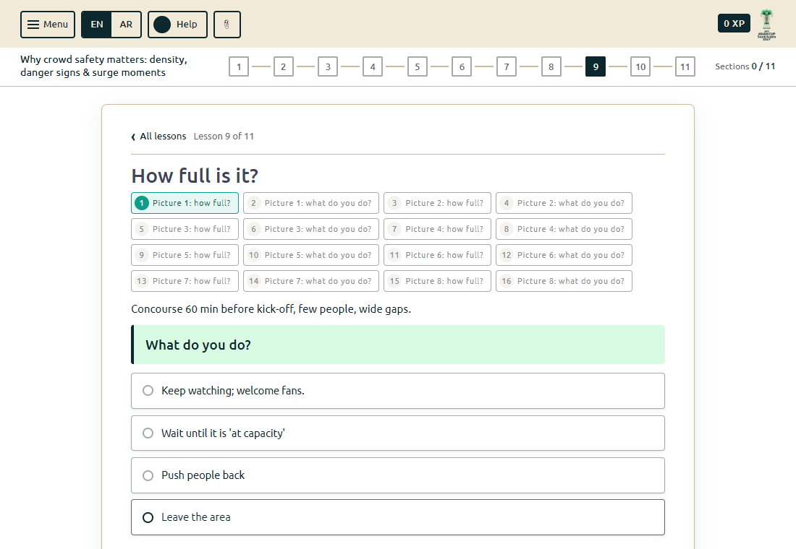
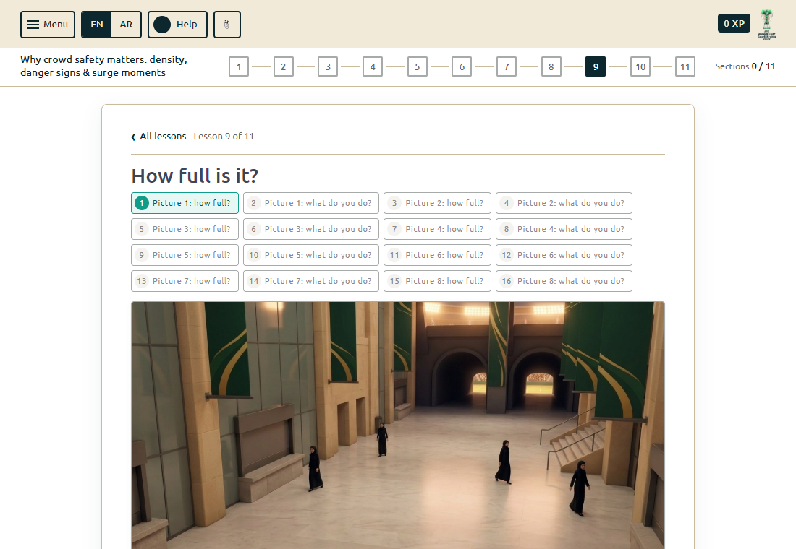
Reply to the amendment "did u check all photos?": yes. All 8 pictures on this screen were checked; see the sheet below. Pictures 3–8 show a few people far apart, nowhere near their answer's level. Picture 2 is borderline for "Busy". All 8 are now being remade (Part 2, items 10–17), so every picture clearly shows its level.
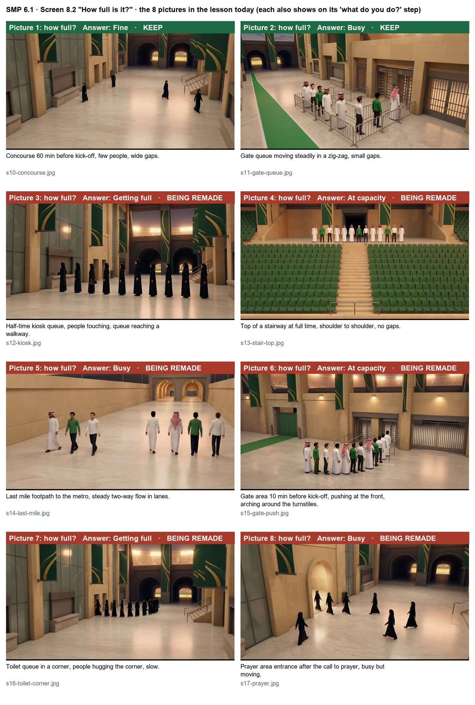
SMP 9.2 Conflict de-escalation · Screen 1.11 "Stop it before it starts"
Client: "smp92-a-1-4 (this video name is useless"
Video smp92-a-1-4 is grey tiles with faint icons, one of them a radio. SMP lessons must show no radios. Its line under the video promises Noura at Gate 3, but she is not in it. Screen 1.13 teaches the same four PART steps, with the same Gate 3 example. So screen 1.11 is removed, and the lesson goes 1.10 → 1.12 → 1.13.
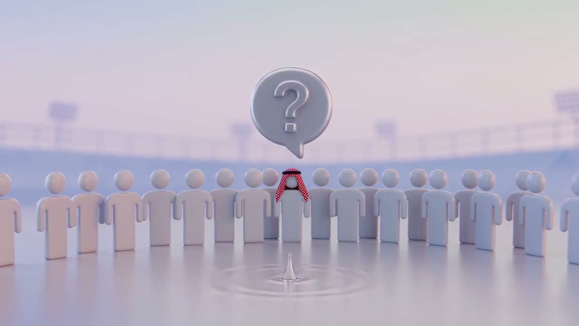
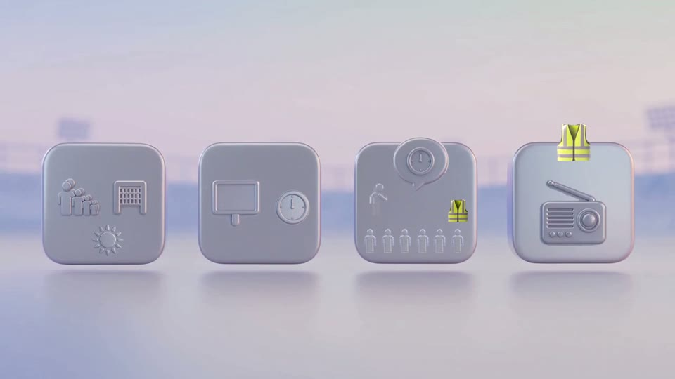
انتبهوا للحروف الأربعة في PART، ولما تفعله نورة عند البوابة 3.
"Watch for the four letters of PART, and what Noura does at Gate 3." Noura is not in the clip.
Screen 1.11 is gone. The same teaching stays on:
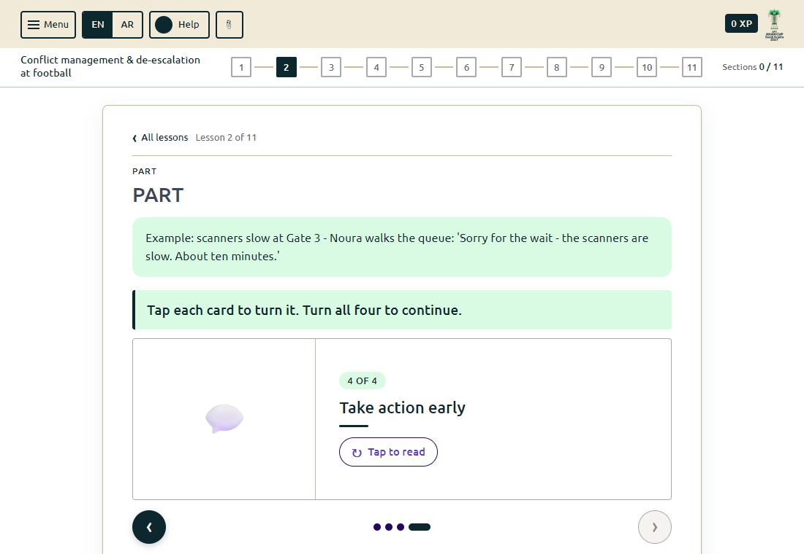
Kept, and done: the line "The best conflict is the one that never starts" was only in the removed voice-over. Flip-card screens like 1.13 can't show a callout, so it is now the callout on screen 1.12, the teaching screen just before. It uses the full approved sentence, whose second half was already 1.12's callout, so nothing repeats:
"The best conflict is the one that never starts - and people get angry when they don't know why."
أفضل نزاع هو الذي لا يبدأ أبدًا - والناس يغضبون عندما لا يعرفون السبب.
SMP 9.2 Conflict de-escalation · 7 screens
Our own check while fixing 9.2 (SMP rule: no radios shown).
Only the small icon changes. The 7 radio icons beside "tell your supervisor" and "report" lines are now a speech balloon, on screens 0.6, 1.2, 1.13, 3.8, 6.4, 6.6 and 10.2. No words changed.
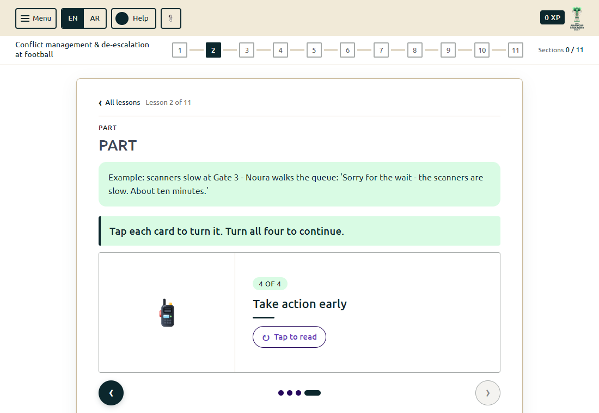
SMP 12.1 Special needs awareness & assisting fans · Main page (Arabic), "What you'll be able to do"
Client: "There still is English text in the main page."
Objective 1 was still the old English line ("…disability can be visible…"). It had no Arabic match, so it showed in English. It now uses the approved "special needs" line already on the lesson's objective card. The browser tab title also shows in Arabic now, in every lesson.
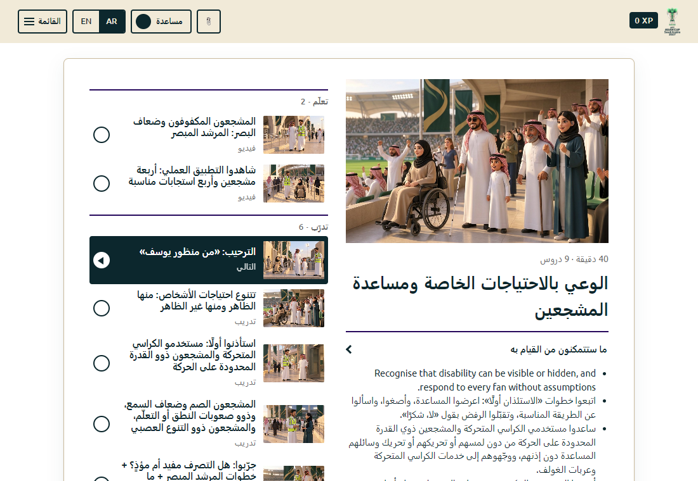
SMP 12.2's main page was checked the same way, with every section opened: no English left. The "CONFIDENTIAL – AFC2027…" line in the job aids shows in both languages on purpose. That is the client's own rule (Fayez/Owen).
SMP 2.1 Your role, authority limits & chain of command · Lesson check result
Client: "First time I scored 4/5 but it wasn't a passing grade, now 4/5 was a passing grade? Is there any specific rule?"
The answer: yes. By the client's rule RL-8.2, every question marked "Safety" must be right. 4/5 fails when the wrong answer is a Safety question, and passes when it is not. That is why the same score failed once and passed later. The line under the score said only "4 of 5 needed". It now states the whole rule, using the approved Arabic line already on the test's start screen. This applies to every lesson test.
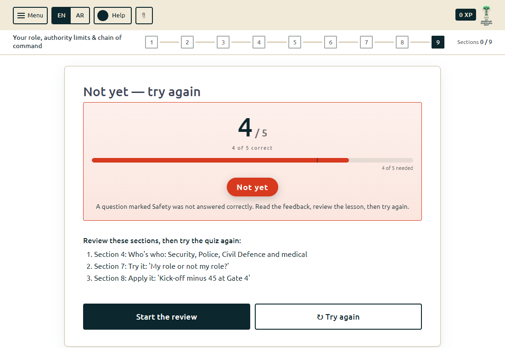
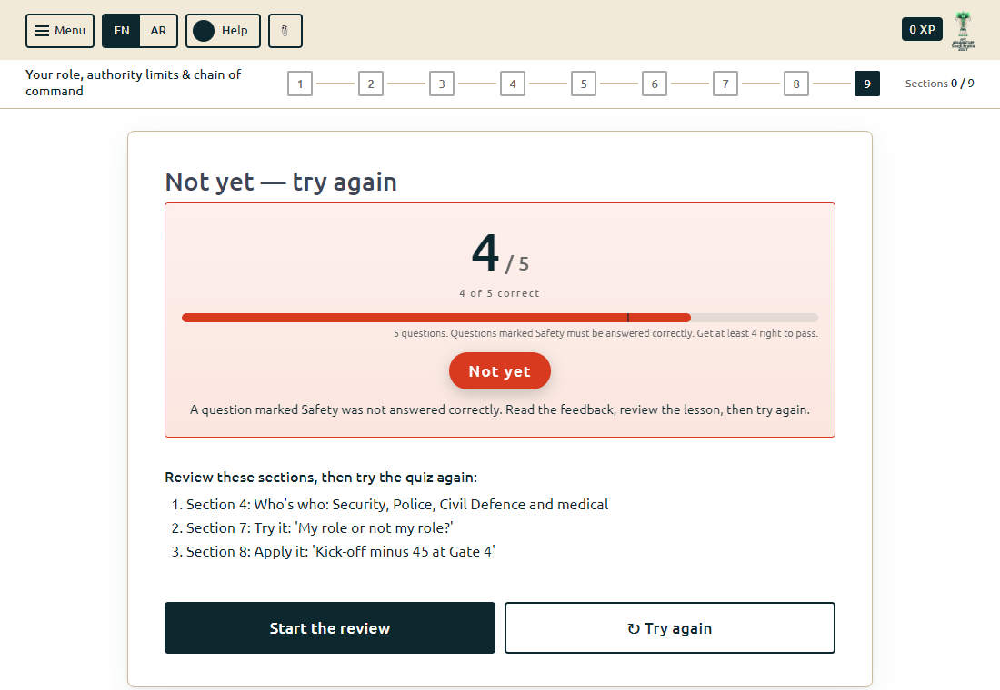
All SMP lessons · Job aids (📎) inside the LMS
Client: "Downloads. This is for all lessons & modules. If this is an LMS issue, we will need to work on it to make sure it is fully functional."
The LMS plays each lesson inside a locked frame. That frame blocks new tabs and file downloads unless the LMS allows them. The PDFs are in every zip, so the files are fine; the browser just won't let the lesson open them. All lessons are already on the LMS, so these three fixes are made in the LMS admin, with no new zips. Tick the one to go with.
Most LMSs have a per-activity setting called "Display: new window / popup" or "Launch in separate window". In its own window the lesson isn't in the locked frame, so the PDF opens and downloads. It is one setting per activity, and some LMSs can change it in bulk. Try it on one lesson first; if the download works, roll it out to all.
Put each lesson's PDF next to the lesson as an LMS file or resource. Learners download it straight from the LMS, so it always works, whatever the frame does. The PDFs come from the zips already made (the aids/ folder in each). More clicks, but guaranteed. Use this if the LMS can't launch in a new window.
The frame settings are called allow-popups and allow-downloads. If they switch them on, every lesson works at once. Many hosted LMSs don't allow this change.
To confirm the cause on the LMS: open a lesson, press F12, then tap Download. If the console shows "mozapp: the LMS frame blocked a new tab", that is the cause. Lessons zipped from now on also show a blocked PDF's pages inside the lesson, so the Job aids panel is never a dead end.
"Before" is what is in the lesson today. "After" is the new media that arrived on 16 Nov. It is not placed in the lessons yet; approved items get placed next.
SMP 12.2 Accessible routes · Screen 4.1 "The right route"
Client: "The highlights in the video don't sync with the VO. The Arabic word مرافق is pronounced wrong. The overall image is unclear… Suggest replacing with 2 images each for one of the 2 marshals in the lesson."
The map video becomes picture 1 (Faisal guides Abdullah's family to the lift) and picture 2 (Majed sends them to a staircase). The voice-over is re-recorded with the same approved words. مرافق is read as al-murāfiq ("the companion"); the captions keep the approved spelling.
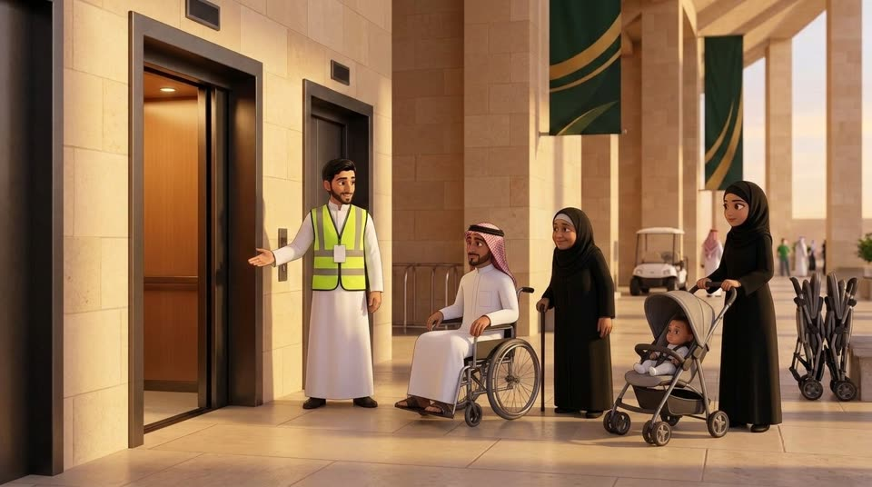
Picture 1, voice-over lines 1–3: Faisal at the lift with Abdullah's family, an open hand to the lift.">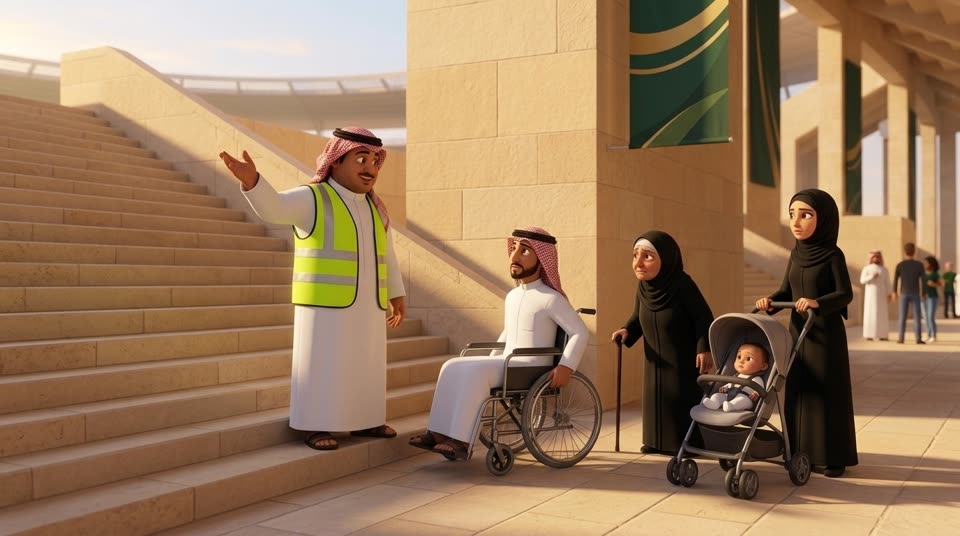
Picture 2, line 4: Majed waves the family to the staircase. The wheelchair stops at the bottom step.">SMP 4.1 Communicating with crowds · Screen 5.1 "Which signal is this?", round 4
Client: "Sign image here missing."
Round 4 gets a picture of Majed pointing vaguely with one finger and shrugging. This is the wrong signal on purpose; the answer is "Not a standard signal".
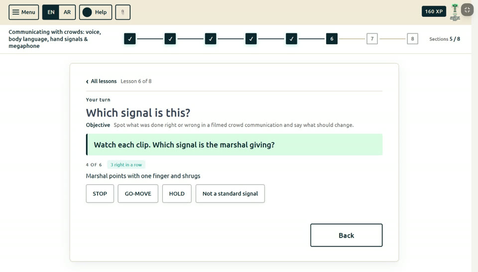
SMP 6.1 Crowd safety matters · Screen 1.2 "Ibrox, Glasgow - 2 January 1971", steps 1, 2 and 4
Client: "Glasgow and it shows again and again Saudi guys randomly moving."
Steps 1 and 2 show 1971 Scottish football fans on a steep stairway: crowding, then the fall, with nobody shown hurt. Step 3 becomes a Glasgow memorial. Step 4 shows our marshal Faisal holding a calm queue at the top of a stairway: the lesson.
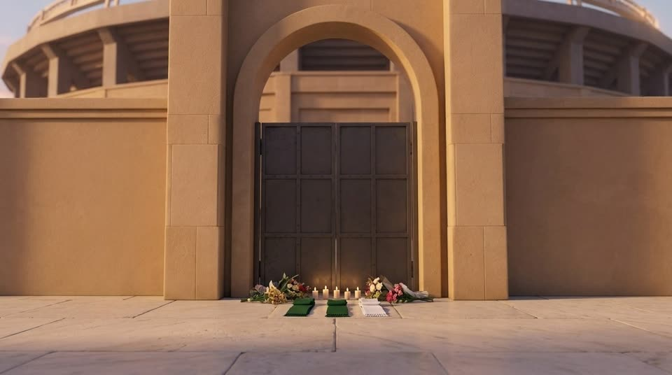
Rows of identical Saudi men in a sandstone stadium. Wrong for Glasgow 1971.
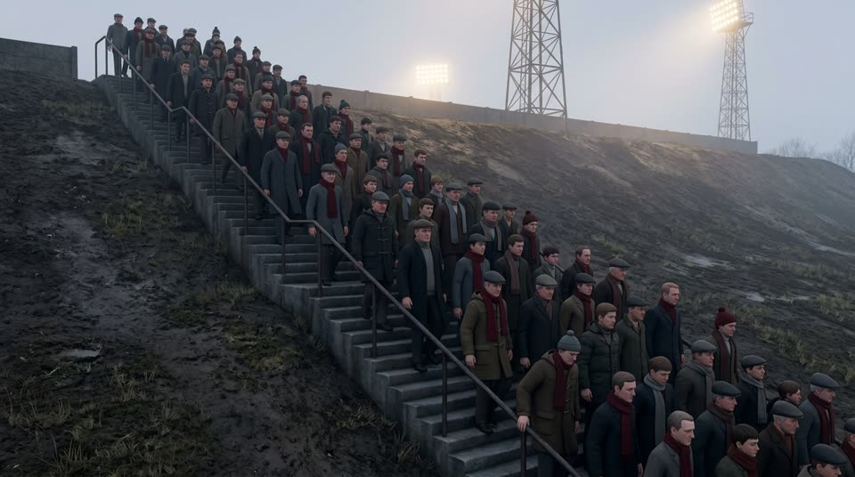
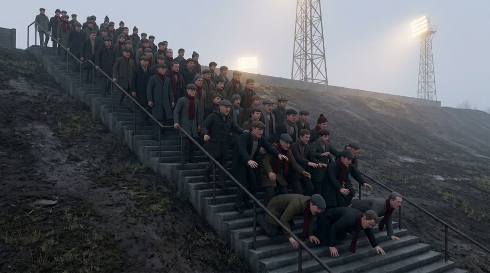
SMP 6.1 Crowd safety matters · Screen 3.5 "Shockwaves and crowd collapse"
Client: "They are folding hands and the video we rejected is now images and they don't actually make sense… we need something like this (ChatGPT made) 10 seconds."
One 10 s clip in four beats matching the four step texts: packed crowd, push wave, sway, collapse. Its look follows the client's own reference picture. The four step texts stay.
SMP 6.1 Crowd safety matters · Screen 5.1 "Danger signs", page 2 "In a dense crowd"
Client: "Used here also, same lesson."
The tap-the-danger picture becomes the fall moment from the new 10 s clip, and the "Someone falling" tap area is moved onto it. No separate prompt is needed.
SMP 6.1 Crowd safety matters · Screen 8.2 "How full is it?", all 8 pictures
Client: "Many of those with no images or photos." · Reviewer: "did u check all photos?"
Each picture must show its level at a glance, because that is the whole task: concourse fine, gate queue busy, kiosk queue getting full, stair top at capacity, metro path busy, gate push at capacity, toilet queue getting full, prayer room busy.
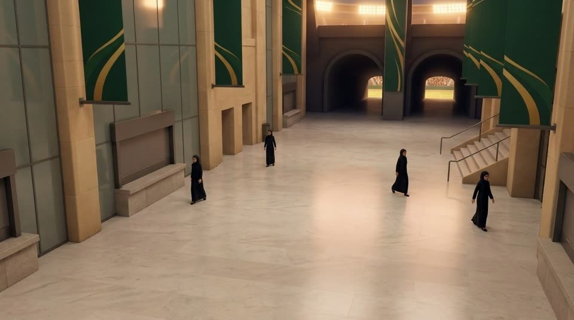
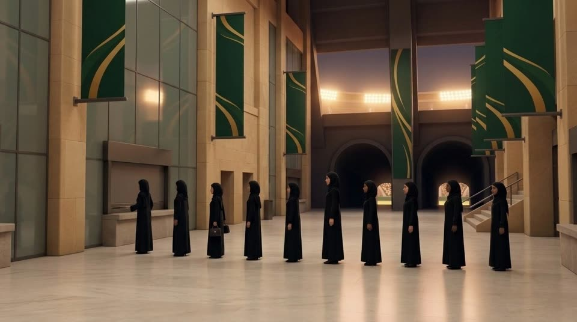
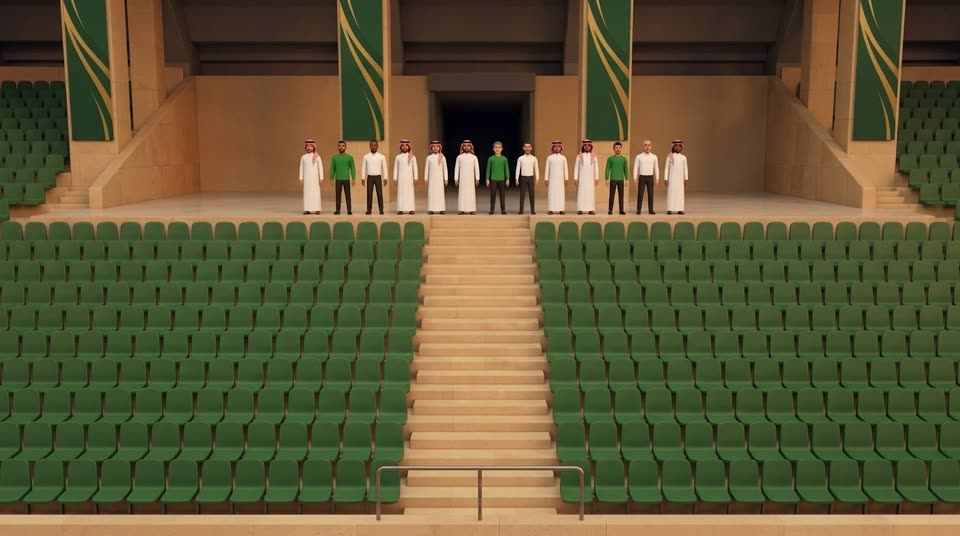
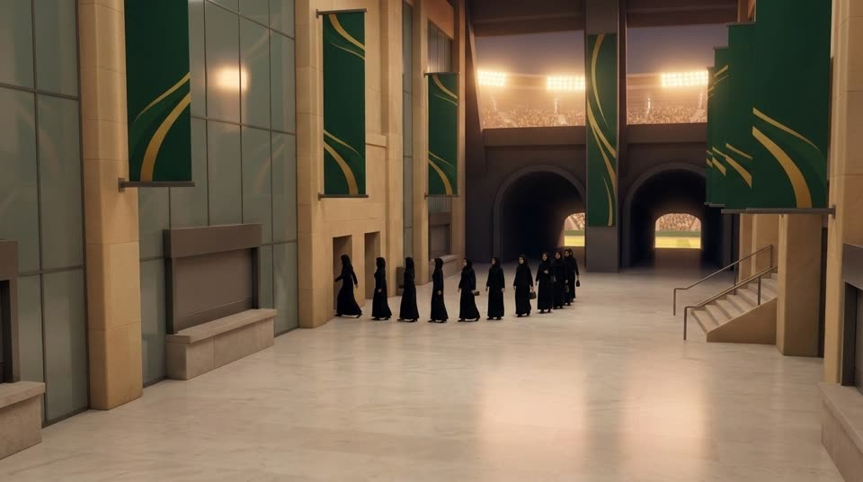
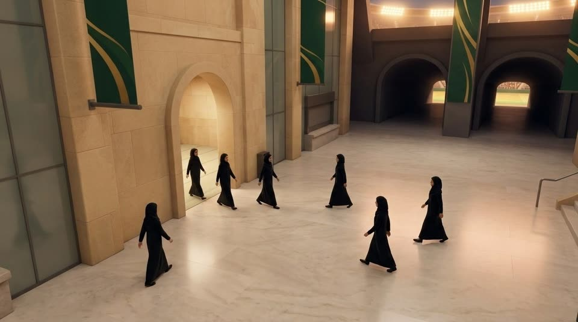
Most show a few people far apart, nowhere near the level the answer says.
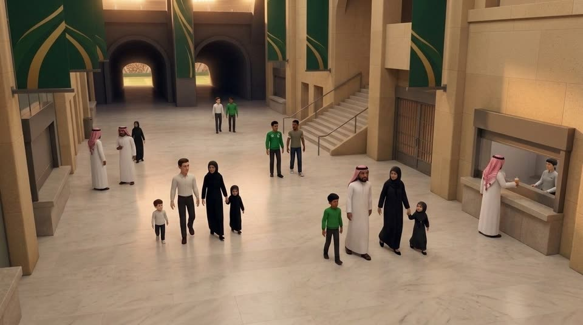
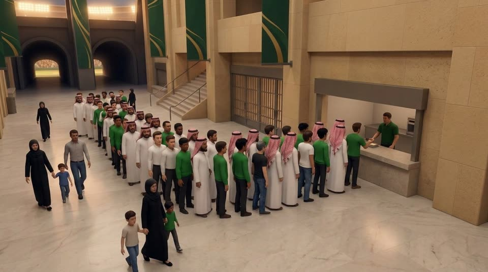
SMP 10.2 Evacuation, emergency signals & exit gates · Screen 2.1 "Signals: stand-by and evacuate"
Client: "Please remove or fix the video, most of it doesn't make any sense."
The voice-over stays exactly as approved. The pictures change: stand-by (Noura checks her closed gate), evacuate (gate open, fans leaving; this picture is already in the lesson), and all clear (Noura back at her post).